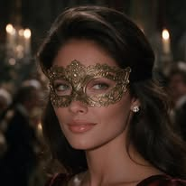
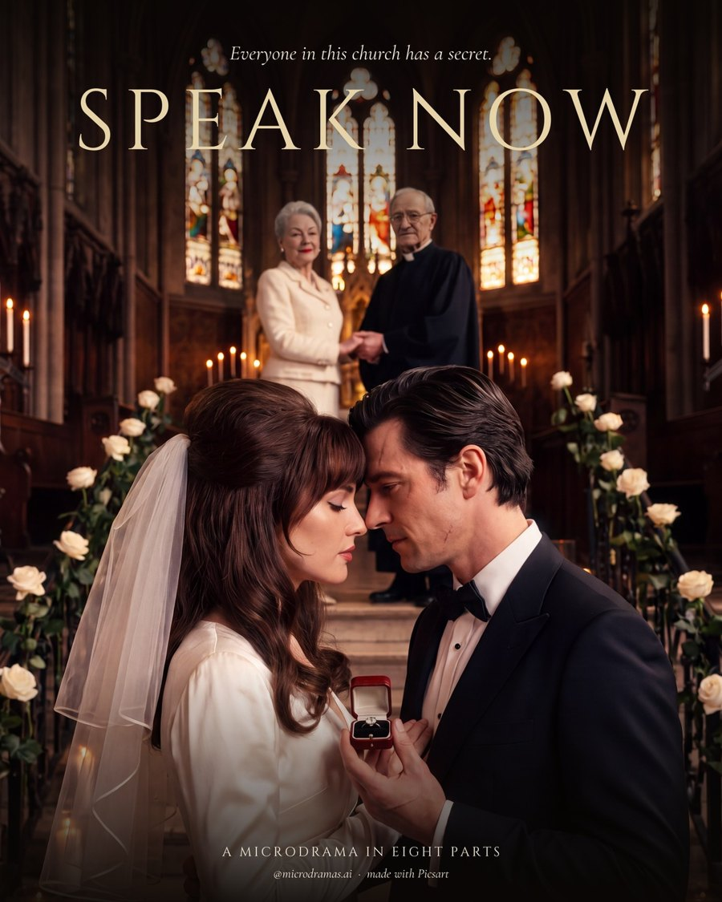
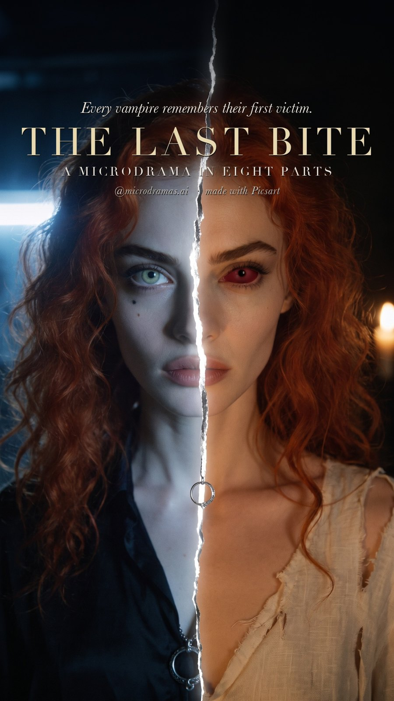
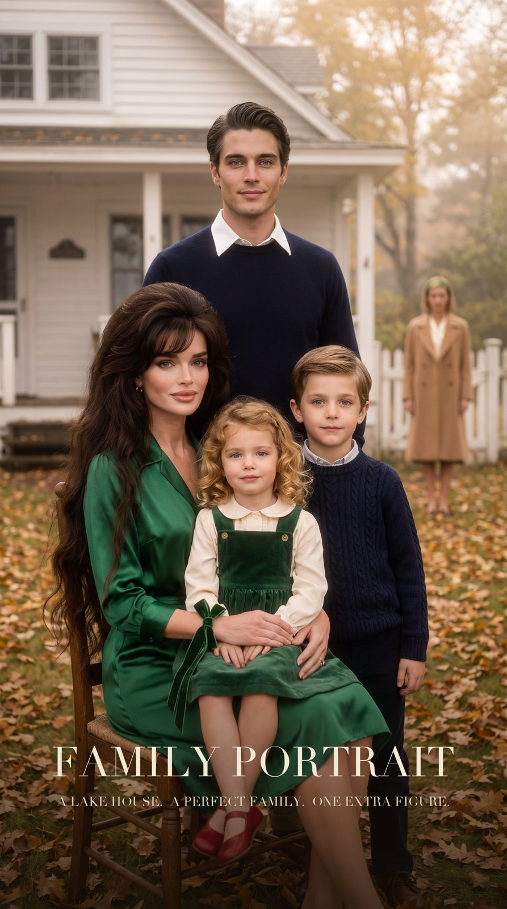
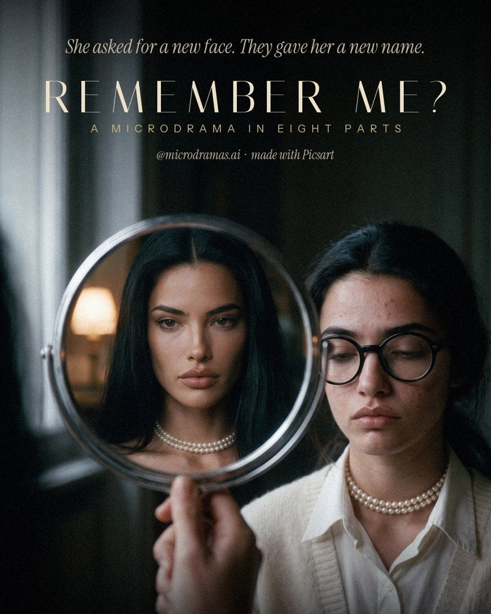

Microdramas · AI love stories Live on Instagram + TikTok
@microdramas.ai
Tiny love stories, big 90s drama 🎬 New part every week. An official Picsart channel, made with Picsart AI.
Serialized AI microdramas shot like a 1990s film: one scene, one twist, 30 to 60 seconds per part. Four series so far, each with its own cast. Every part goes to Instagram and TikTok at the same time.
10followers
15posts live
2,398views
103likes
89saves
TikTok
1followers
15posts live
1,847views
41likes
10saves
4 series · 26 parts made · 15 live · 7 scheduled · 4 made but not scheduled yet. Channel opened Oct 13.

SPEAK NOW
At a 1990s Manhattan church wedding the bride objects to her own marriage, and every guest has a secret about why. One rainy afternoon and the morning after, in eight parts: hidden letters, a husband nobody mentioned, a sister nobody knew about, and a ring bought forty years ago.
8 live

THE LAST BITE
A young woman survives a vampire attack and starts remembering murders from eight centuries before her birth. The immortal who protects her, the friend who swears she is still human and the Regent who hunts her are all afraid of the same thing: what she remembers next.
5 live1 made, not scheduled

FAMILY PORTRAIT
A lakeside house, a perfect family, and a seven-year-old who keeps drawing a fifth figure outside the garden gate: a lady with yellow hair who waves at his little sister. She is the children's mother, declared drowned five years ago by the grandmother who paid her to disappear. The wife who raised them has known for three years.
1 live4 scheduled1 made, not scheduled

REMEMBER ME?
Carmela Vane, the plain heiress everyone laughed at, vanishes after a cruel bet at a charity ball and returns a year later with a new face and a new name. The man who laughed loudest falls for her, his fiancée who bullied her starts to suspect, and the only person who recognises her is the one who was kind.
1 live3 scheduled2 made, not scheduled
Numbers come from the broker's analytics for each post (Instagram and TikTok), last synced 2026-10-16 11:32:20 UTC, follower counts from Oct 16. Statuses and dates come from the scheduling ledgers. Every post is labelled as AI on the platform and every caption ends with "made with Picsart". Back to the concept pages.